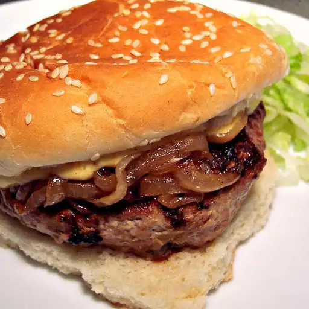

Kickin' Turkey Burger with Caramelized Onions and Spicy Sweet Mayo

Description
A spicy, flavorful, and moist turkey burger. It tastes delicious with extra lean ground turkey breast. The grated onion, barbeque sauce, and Worcestershire sauce add moisture as well as flavor to the turkey.
Ingredients
Spicy Sweet Mayo
1 cup light mayonnaise
¼ cup coarse-grain mustard
¼ cup honey
1 tablespoon prepared horseradish
Hot pepper sauce to taste
1 teaspoon ground cayenne pepper
Burgers
750g ground turkey breast
½ large onion, grated
1 jalapeño pepper, seeded and minced
2 tablespoons barbeque sauce
2 tablespoons Worcestershire sauce
¼ teaspoon liquid smoke flavoring
1 tablespoon steak seasoning
1 teaspoon dry mesquite flavored seasoning mix
1 tablespoon olive oil
½ large onion, sliced
5 hamburguer buns, split
Steps
Combine mayonnaise, mustard, honey, hot pepper sauce, and pepper in a bowl. Cover and refrigerate.
Mix ground turkey, grated onion, jalapeño, barbeque sauce, Worcestershire sauce, liquid smoke, steak seasoning, and mesquite seasoning in a large bowl. Form into 5 patties.
Heat olive oil in a skillet over medium heat. Stir in onion; cook and stir until onion has softened and turned translucent, about 5 minutes. Reduce heat to medium-low, and continue cooking and stirring until onion is very tender and dark brown, 15 to 20 minutes more.
Cook patties in a medium skillet over medium heat, turning once, to an internal temperature of 85°C, about 6 minutes per side. Serve on buns topped with prepared mayo and caramelized onions.
Heat the buns in a toaster until a light brown toast. Put the patty in and then the onions with the sauce on top.